P3
Outline
-
Character Kinematics
- Skeleton and forward Kinematics
-
Inverse Kinematics
- IK as a optimization problem
- Optimization approaches
- Cyclic Coordinate Descent (CCD)
- Jacobian and gradient descent method
- Jacobian inverse method
P4
Character Kinematics
the study of the motion of bodies without reference to mass or force
P8
joint, bone, skeleton
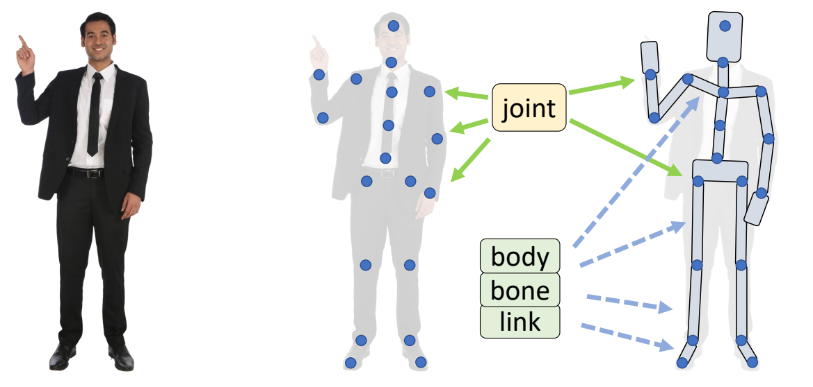
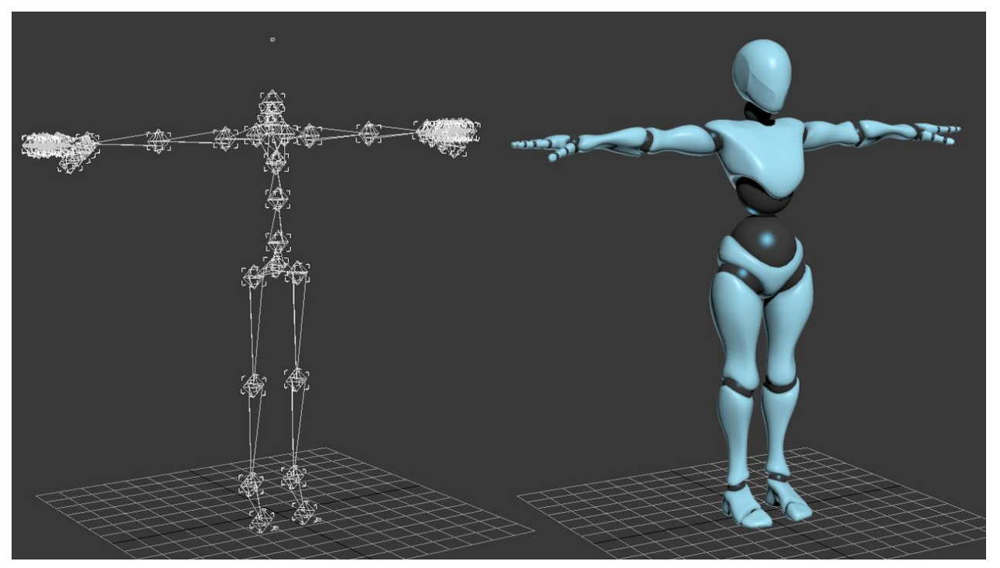
✅ 关注关节的位置和旋转
P13
Kinematics of a Chain
问题描述
要使手臂摆成指定的动作，每个关节在各自坐标系下的旋转是多少？
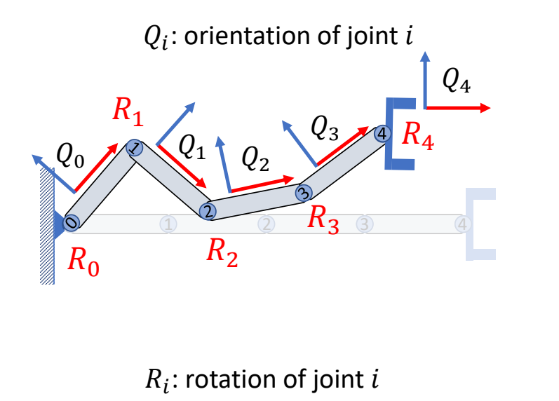
求\(Q_0, Q_1, Q_2, Q_3, Q_4\)
P14
初始pose
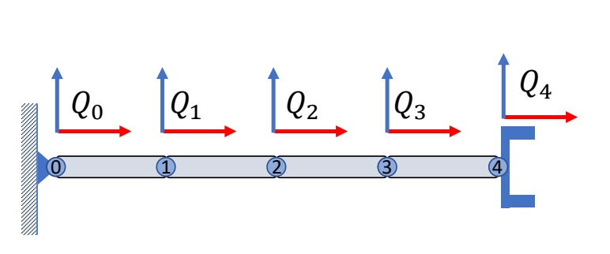
$$ Q_0=Q_1=Q_2=Q_3=Q_4=I $$
✅ 这一个定义了5个关节的手臂。在每个关节上绑上一个坐标系。
P15
旋转关节4
把关节4旋转R4以后
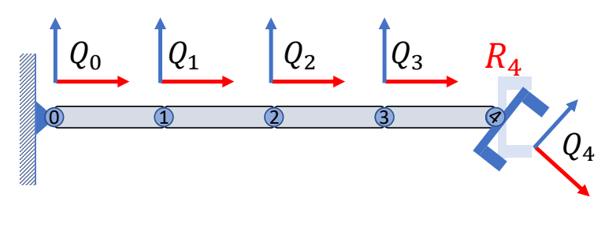
✅ \(Q\)：在世界坐标系下的朝向
✅ \(R\)：在局部坐标系下的旋转
$$
\begin{matrix}
Q_0=I\quad\\
Q_1=I\quad\\
Q_2=I\quad\\
Q_3=I\quad\\
Q_4={\color{Red}{R_4}}
\end{matrix}
$$
P16
旋转关节3
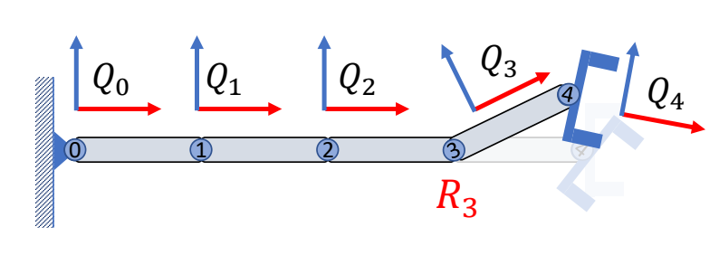
把关节3旋转R3以后，Q3和Q4会同时受到影响
$$
\begin{matrix}
Q_0=I\quad\quad\\
Q_1=I\quad\quad\\
Q_2=I\quad\quad\\
Q_3={\color{Red}{R_3}}\quad\\
Q_4={\color{Red}{R_3}}R_4
\end{matrix}
$$
P17
依次旋转关节2， 1， 0
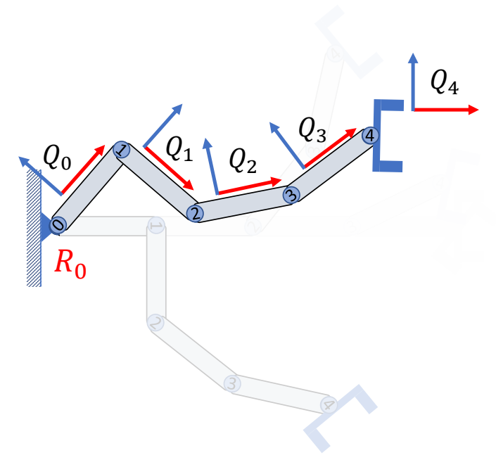
$$ \begin{matrix} Q_0={\color{Red}{R_0}}\quad \quad\quad\quad \\ Q_1={\color{Red}{R_0}}R_1 \quad\quad\quad \\ Q_3={\color{Red}{R_0}}R_1R_2R_3\quad \\ Q_4={\color{Red}{R_0}}R_1R_2R_3R_4 \end{matrix} $$
P20
简化公式，用递推的形式描述
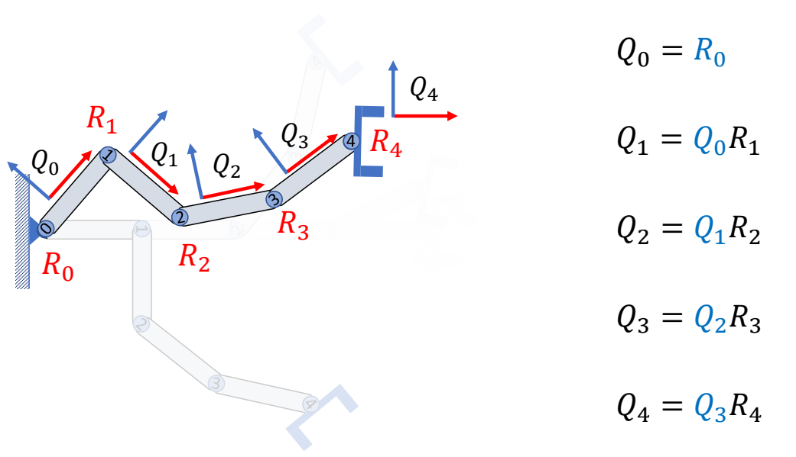
P21
From rotation(local) to orientation(global)
$$ Q_i = Q_{i-1}R_i $$
From orientation(global) to rotation(local)
$$ R_i = Q^T_{i-1}Q_i $$
✅ 这些 \(Q\) 都是全局旋转，\(R\) 是局部旋转。
Kinematics with position
P23
初始状态
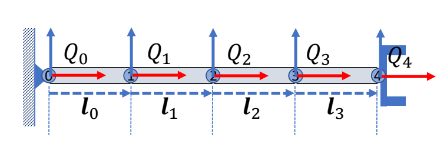
✅ \( 𝒍 \)：子关节位置在父坐标系下的坐标。
P31
positon with pose
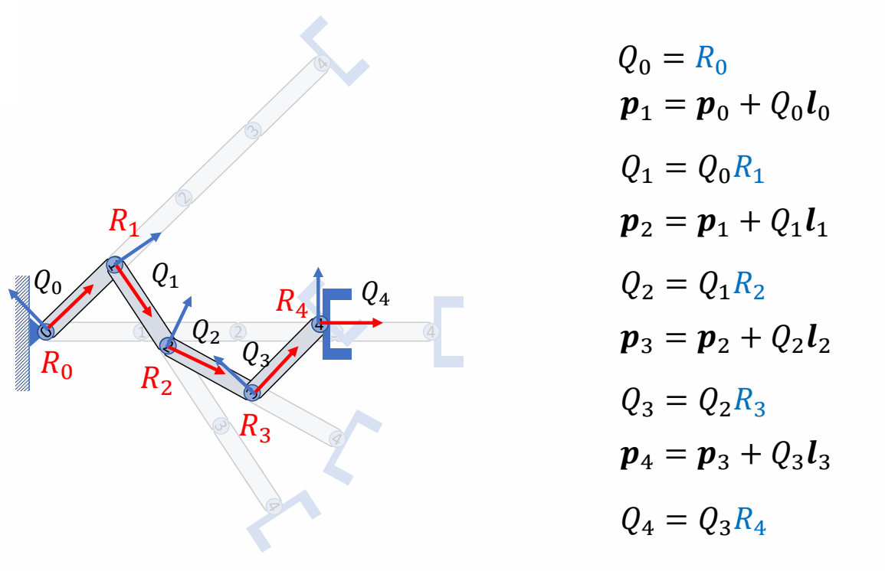
✅ \(p\) 是全局位置，\( 𝒍 \) 是局部偏移。
P37
Forward Kinematics of a Chain: Summary
position
Given the rotations of all joints \(R_i\), find the coordinates of \(x_0\) in the global frame \(x\):
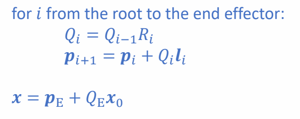
✅ \(x_0\) 是 \(R_4\) 坐标系下的点，求它在某个父坐标系下的位置。
✅ \(p\)：关节在全局坐标系下的位置
✅ 第1步：根据 \(R_i\) 和 \( 𝒍 _i\) 求出 \(Q_i\) 和 \(P_i\)
✅ 第2步：\(E\) 可以是任意父结点，公式都适用
P38
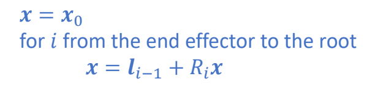
✅ 是上一页的另一种写法，不需提前算出中间变量。
P39
rotation
Given the rotations of all joints \(R_i\), find the coordinates of \(x_0\) relative to the local frame of \(Q_k\):
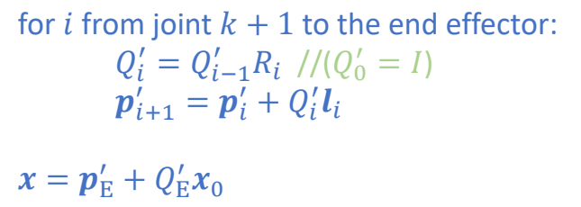
✅ 已知全局坐标系下的坐标，求 \(Q_k\) 下的坐标。
P40
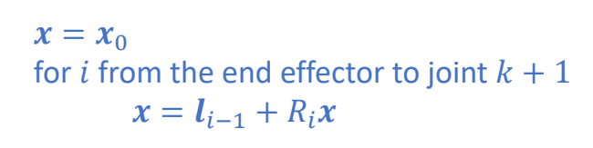
✅ 对应上一页的另一种写法
P41
Kinematics of a Character
骨骼的参数化表示
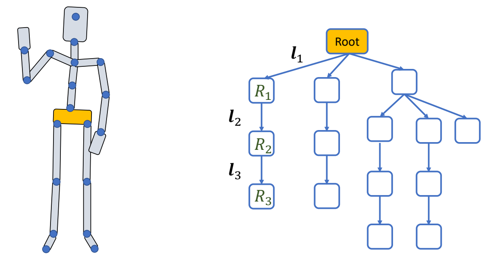
✅ 把角色建模成多条关节链。
P43
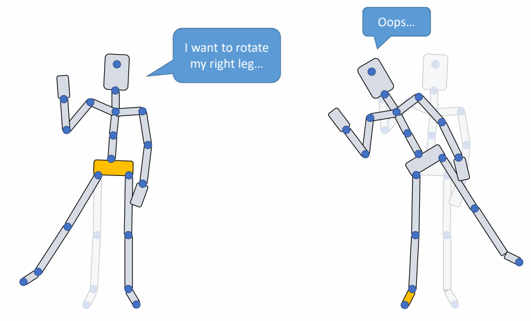
✅ 以不同关节为 root，同样旋转会得到不同效果。
P45
Types of Joints
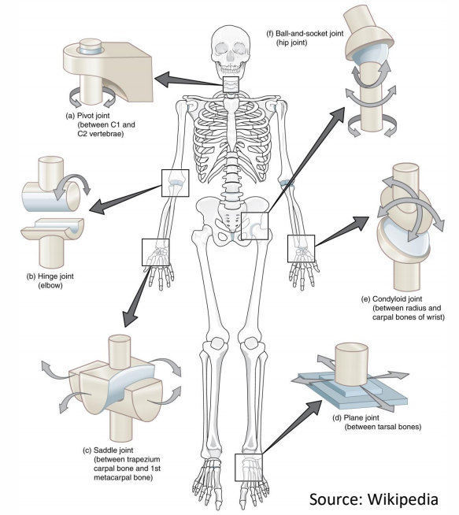
P50
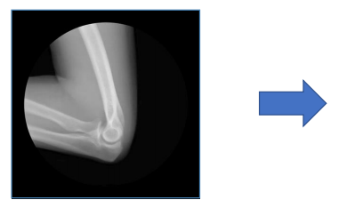 | 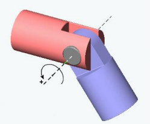 | knee, elbow \({\color{Red}{1 \text{DoF}}}\) \(\theta_{\min }\le \theta\le \theta_{\max } \) hinge joint revolute joint |
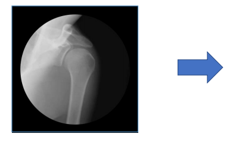 | 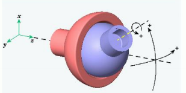 | hip, shoulder \({\color{Red}{3 \text{DoF}}}\) \(\theta_{\min }\preceq \theta \preceq \theta_{\max } \) ball-and-socket joint |
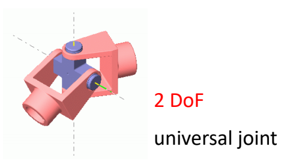 | 手腕。其实手腕不能自转。 2 Dof |
✅ 关节的自由度最多为3，因为不能自主移动。Hips 除外。 ✅ 自由度：一个物理系统，需要多少参数可以唯一准确地描述它的状态。
✅ 6 DOF＝3 平移 ＋ 3 旋转。
姿态的参数化表示 Pose Parameters
P55
$$ (t_0,R_0,R_1,R_2\dots \dots ) $$
$$ \text{root } \mid \text{ internal joints} $$
joints are typically in the order that every joint precedes its offspring
for \(i\) in joint_list:
$$ \begin{align*} p_i= & i^,\text{ s parent joint} \\ Q_i=& Q_{pi}R_i \\ x_i= & x_{pi} + Q_{pi}l_i \end{align*} $$
✅ 一个动作的参数化表示：
✅ 全局位置＋root 朝向＋各关节旋转
✅ 通常要求，关节顺序为父在前子在后，这样只须遍历一遍就能完成 FK.
❓ Q2: how should we allow stretchable bones?
✅ 答：增加参数，3 Dof 增加为 6 Dof.
P58
Example: motion data in a file
BVH files
- HIERARCHY: defining T-pose of the character
- MOTION: root position and Euler angles of each joints
See: https://research.cs.wisc.edu/graphics/Courses/cs-838-1999/Jeff/BVH.html
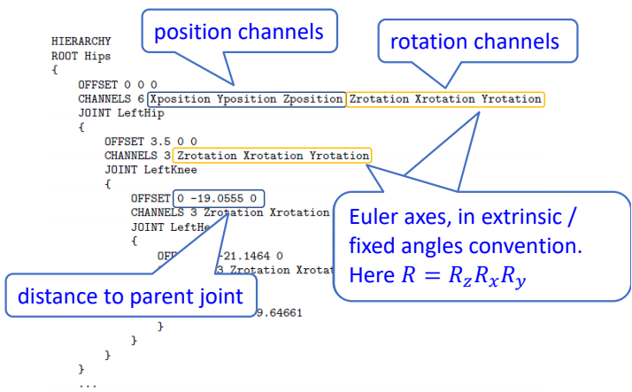
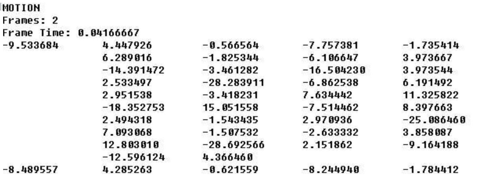
P59
Inverse Kinematics
🔎 A. Aristidou, J. Lasenby, Y. Chrysanthou, and A. Shamir. 2018.
Inverse Kinematics Techniques in Computer Graphics: A Survey.
Computer Graphics Forum
P61
Forward and Inverse Problems
For a system that can be described by a set of parameters \(\theta \), and a property 𝒙 of the system given by
$$ x=f(\theta ) $$
Forward problem:
-
Given \(\theta \), we need to compute \(x \)
-
Easy to compute since \(f\) is known, the result is unique
-
DoF of \( \theta \) is often much larger than that of \(x \). We cannot easily tune \(\theta \) to achieve a specific value of \(x\).
Inverse problem:
-
Given \(x \), we need to find a set of valid parameters \(\theta \) such that\(x=f(\theta) \)
-
Often need to solve a difficult nonlinear equation, which can have multiple solutions
-
\(x\) is typically meaningful and can be set in intuitive ways
P62
Inverse Kinematics问题描述
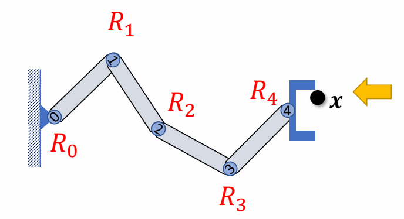
Given the position of the end-effector \(x\), Compute the joint rotations \(R_i\)
P64
✅ 大部分情况下IK问题是多解问题
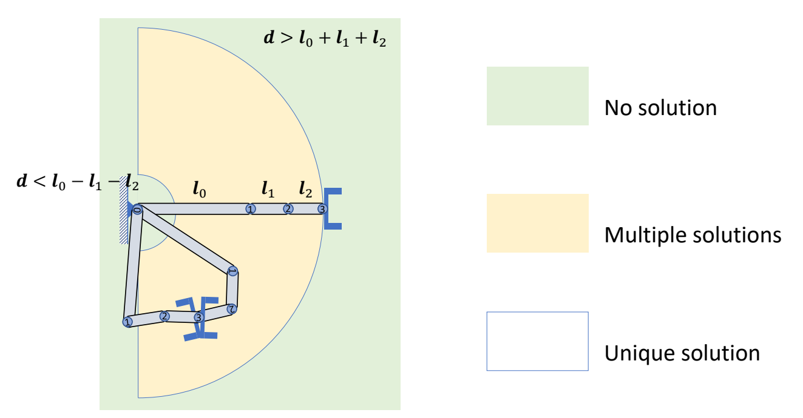
P68
two-joint IK
Step 1: Rotate joint 1 such that
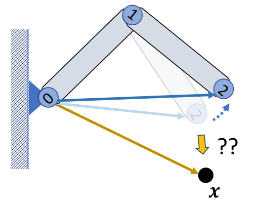
$$ ||l_{ox}||=||l_{02}|| $$
✅ 使用余弦公式
Step 2: Rotate joint 0 such that
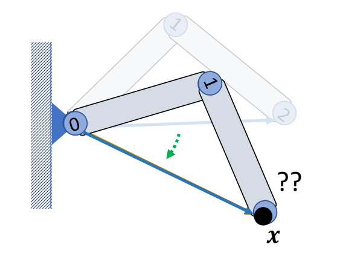
$$ l_{ox}=l_{02} $$
✅ 叉乘得到旋轴，点乘得到旋转角。
Step 3: Rotate joint 0 around \(l_{ox}\) if necessary
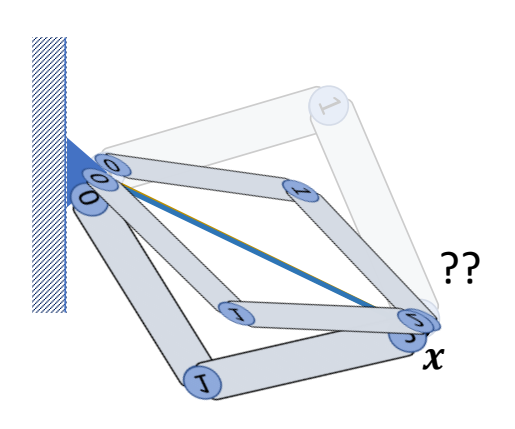
Multi Joint IK
P72
机械臂场景，关节有多个，指定末端结点的位置和朝向
$$ x=f(\theta ) \\ Q=Q(\theta ) $$
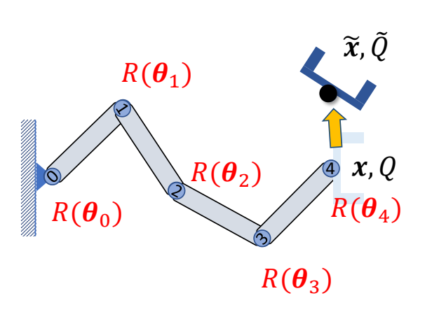
✅ 控制末端点的朝向比较简单，但控制末端点的位置比较难，因此重点考虑如何控制末端点的位置
P74
IK as an Optimization Problem
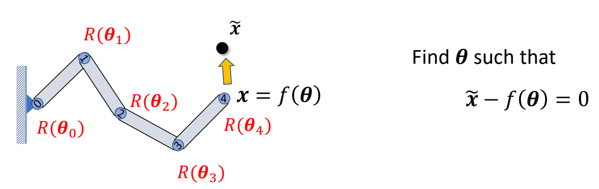
P75
Find \(\theta \) to optimize
$$ \min_{\theta } \frac{1}{2} ||f(\theta )-\tilde{x} ||^2_2 $$
✅ 用迭代的方法，从当前 motion 出发，优化出目标 motion.
P88
CCDIK
Cyclic Coordinate Descent (CCD)
Update parameters along each axis of the coordinate system
Iterate cyclically through all axes
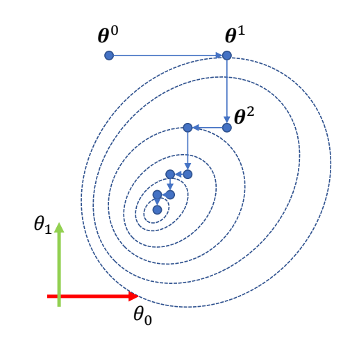
P90
Cyclic Coordinate Descent (CCD) IK
✅ 叉乘得到旋转轴，点乘得到旋转角度。
| Rotate joint 3 such that \(𝒍_{34}\) points towards \(\tilde{x}\) | 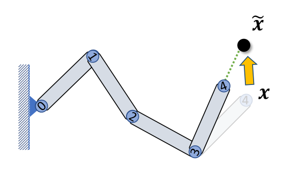 |
| Rotate joint 2 such that \(𝒍_{24}\) points towards \(\tilde{x}\) | 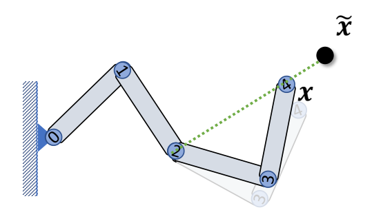 |
| Rotate joint 1 such that \(𝒍_{14}\) points towards \(\tilde{x}\) | 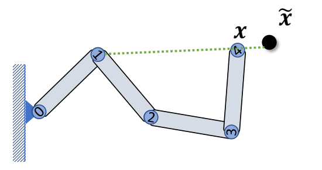 |
| Rotate joint 0 such that \(𝒍_{14}\) points towards \(\tilde{x}\) | 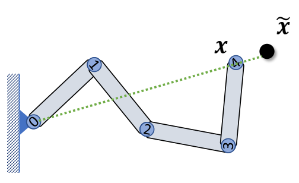 |
| Rotate joint 3 such that \({l}'_{34}\) points towards \(\tilde{x}\) | 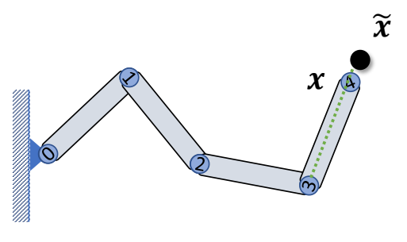 |
| …… |
Iteratively rotation each joint to make the end-effector align with vector between the joint and the target
Easy to implement, very fast
The “first” joint moves more than the others May take many iterations to converge Result can be sensitive to the initial solution
✅ 一个动作序列做 CCD，可能结果不稳定，有跳变。
✅ 前面例子是 3210 的调整顺序，也可以是 0123 的顺序。
✅ 先移到的关节调整幅度会大一点，所以一般从末端开始。
P105
Gradient Descent
CCD下降没有考虑目标函数的性质，考虑目标函数的性质可以得出下降更快的方法。
✅ 关于梯度下降法跳过。
针对目标函数
$$ \min_{\theta } \frac{1}{2} ||f(\theta )-\tilde{x} ||^2_2 $$
其梯度为：
$$
\begin{align*}
\nabla_\theta F(\theta ^i)= & (\frac{\partial f}{\partial \theta }(\theta ^i))^T(f(\theta ^i)-\tilde{x})\\
= & J^T \Delta
\end{align*}
$$
✅ \(J\) 是 Jacobia矩阵， \( \Delta \) 是位置差
P106
因为更新函数为：
$$ \theta ^{i+1}=\theta ^i-\alpha J^T\Delta $$
$$ J= \frac{\partial f}{\partial \theta }=(\frac{\partial f}{\partial \theta_0 }\frac{\partial f}{\partial \theta_1 }\dots \frac{\partial f}{\partial \theta_n } ) $$
J是一个3*N的矩阵，N代表关节数。
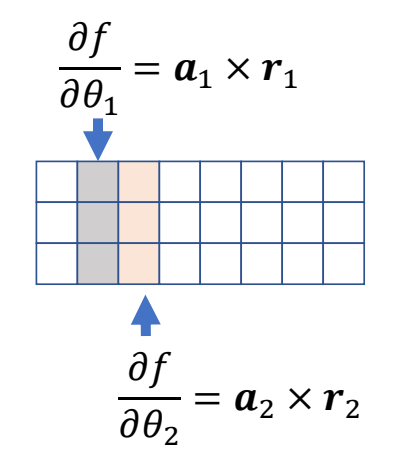
怎么计算J？
方法一：使用machine learning framework的autograd功能
方法二：有限差分
方法三：Geometric Approach
P114
Geometric Approach
问题描述
Assuming all joints are hinge joint
求关节 1 旋转轴 \(a_1\)，对 \(x\) 位移的影响
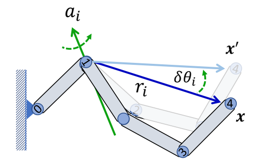
计算过程
$$ {x}' -x=(\sin \delta \theta _i)a_i\times r_i+(1-\cos \delta \theta _i)a_i\times(a_i\times r_i) $$
$$ \frac{ \partial f }{\partial \theta _ i} = \lim _ {\delta \theta _ i \to 0} \frac{{x}'-x }{\delta \theta _ i}= a _ i\times r _i $$
P117
更通用的场景- ball joints
❓ How to deal with ball joints?
A ball joint parameterized as Euler angles:
$$ 𝑅_𝑖 = 𝑅_{𝑖𝑥}𝑅_{𝑖𝑦}𝑅_{𝑖𝑧} $$
can be considered as a compound joint with three hinge joints
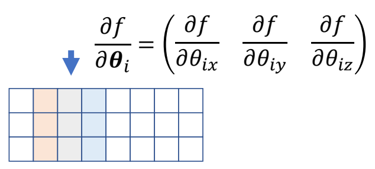
✅ 一个ball joint可以看作是3个hint joint。因此占J矩阵的3列。
也可以写成这种形式：
$$ \frac{ \partial f }{\partial \theta _ {i\ast } } = a _ {i\ast } \times r _ i $$
f对某一个欧拉角的导数，等于这个欧拉角的轴叉乘上末端点到关节点的距离。
需要注意的是，这个的旋转轴a是在世界坐标系下的表示，因此要有一个坐标系的转换。
$$ \begin{align*} 𝒂_{𝑖𝑥} & =𝑄_{𝑖−1}𝒆_𝑥 \\ 𝒂_{𝑖𝑦}& = 𝑄_{𝑖−1}𝑅_{𝑖𝑥}𝒆_𝑦\\ 𝒂_{𝑖𝑧} &= 𝑄_{𝑖−1}𝑅_{𝑖𝑥}𝑅_{𝑖𝑦}𝒆_𝑧 \end{align*} $$
❓ 问：Can we parameterize a ball joint using axis-angle \(\theta u\) and compute Jacobian as
$$ \begin{matrix} \frac{\partial f}{\partial \theta _i} =\theta u\times r_i & ??? \end{matrix} $$
✅ 答：不可以。Jacobian for axis-angle representation has a rather complicated formulation…
P121
Jacobian Transpose / Gradient Descent
First-order approach, convergence can be slow Need to re-compute Jacobian at each iteration
✅ 怎么求 \(J\)，这里讲了 3 种方法：（1）backward 框架（2）差分（3）几何计算。实际上直接用 1 可以解决，不需要自己去算，因此跳过。
✅ 特点：（1）迭代次数比 CCD 少（2）计算量比 CCD 大。
P122
✅ 数值插值算法见 GAMES102.
P124
Quadratic Programming 二次规划问题
✅ 这几页介绍二次函数求极值的问题。
$$ \min_{\theta } F(\theta )=\frac{1}{2} \theta ^TA\theta +b^T\theta $$
where \(A\) is positive definite:
$$ A=A^T,\theta ^TA\theta \ge 0 \text{ for any } \theta $$
P126
公式直接求解
$$ \begin{matrix} \text{Gradient}: \nabla_\theta F(\theta )=A\theta +b \\ \text{Optimality condition}: \nabla_\theta F(\theta ^\ast )=0\\ {\color{Blue} \Downarrow } \\ \theta ^\ast =-A^{-1}b \end{matrix} $$
✅ 二次函数的极值点可以直接从公式求出来
P127
Gauss-Newton Method
✅ IK问题也可以转化为二次函数求极值的问题
$$ F(\theta )=\frac{1}{2} ||f(\theta )-\tilde{x} ||^2_2 $$
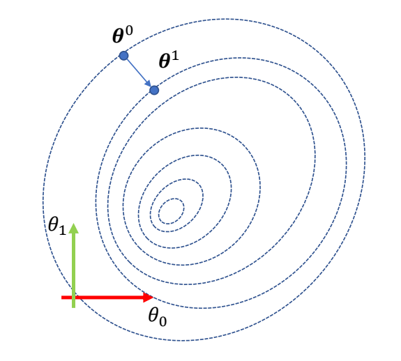
Consider the first-order approximation of \(f(\theta)\) at \(\theta^0\)
✅ 把 \(f(\theta )\) 在 \(\theta ^{\circ} \) 处一阶泰勒展开。
$$ \begin{align*} f(\theta)\approx & f(\theta^0) + \frac{\partial f}{\partial \theta} (\theta^0)(\theta-\theta^0) \\ = & f(\theta^0)+J(\theta-\theta^0) \end{align*} $$
P128
✅ 把它代入目标函数。
\begin{align*} f(\theta)\approx & \frac{1}{2}||f(\theta^0)+J(\theta -\theta ^0)-\tilde{x}||^2_2 \\ = &\frac{1}{2} (\theta -\theta ^0)^TJ^TJ(\theta -\theta ^0)\\ & +(\theta -\theta ^0)^TJ^T(f(\theta ^0)-\tilde{x})+c \end{align*}
P129
first-order optimality condition
✅ 令 \((\nabla F (\theta ))^T=0\)
$$ \begin{matrix} f(\theta)\approx \frac{1}{2}||f(\theta^0)+J(\theta -\theta ^0)-\tilde{x}||^2_2 \\ \Downarrow \\ (\nabla F (\theta ))^T=J^TJ(\theta-\theta^0)+J^T(f(\theta^0)-\tilde{x} )=0 \end{matrix} $$
P133
$$
J^TJ(\theta-\theta^0)=-J^T\Delta
$$
if \(J^TJ\) 不可逆
✅ \(J\) 的维度是 \(3\times N\)，因此 \(J^TJ\) 不可逆。
\(J^TJ\) is \({\color{Red} {\text{NOT}}}\) invertible, but \(JJ^T\) can be invertible
P134
因此做以下转化：
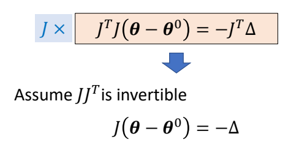
✅ \(\Delta\) 是当前和目标的末端点位置之差。
P135
$$ J(\theta-\theta^0)=\tilde{x} -f(\theta^0) $$
P137
$$ \begin{align*} \theta = & \theta ^0-J^+\Delta \\ = & \theta ^0-J^T(JJ^T)^{-1}\Delta \end{align*} $$
\(J^+\)表示J的(Moore-Penrose) Pseudoinverse
P138
if \(J^TJ\) 可逆
$$ J^TJ(\theta-\theta^0)=-J^T\Delta $$
If \(J^TJ\) is invertible, we have
$$ \theta = \theta^0 - (J^TJ)^{-1}J^T\Delta $$
but when can \(J^TJ\) be invertible?
P141
✅ 答：改变IK的约束条件（例如增加中间关节的位置要求）和自由度（例如限制关节的自由度），可改变 \(J\) 的形状为方阵或高瘦阵，此时 \(J^TJ\) 可逆，则换一种方式求逆。
P143
对比
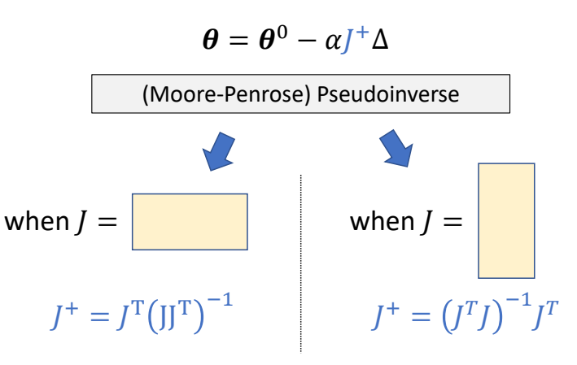
✅ 左：欠约束，右：过约束。
✅ 由于这个方法的本质是把高度非线性的函数做了线性化，所以只是在当前位置附近才有效，远了误差就会非常大。因此增加learning rate。
P145
Usually faster than gradient descent/Jacobian transpose method.
Any problem? \(JJ^T/J^TJ\) can be (near) singular!
✅ 快一点是因为 \(J^＋\) 是近似的 \(J\)，计算量较小，问题是可能得到一个错很远的 \(J^＋\)，导致结果不稳定。
P147
Damped Jacobian Inverse Method
✅ 上一页的问题是伪逆\(J^＋\) 引入的不稳定。
✅ 解决方法：引 \(\lambda\) 阻尼项
$$ J^\ast =J^T(JJ^T+\lambda I)^{-1} $$
$$ J^\ast =(J^TJ+\lambda I)^{-1}J^T $$
P148
Also called Levenberg-Marquardt algorithm
✅ 引 \(\lambda\) 阻尼顶后，两种方式的计算结果相同。
✅ 当 \(\lambda\) 很大时，此方法等价于梯度下降法。
P149
\(\lambda\) 的几何意义
✅ 相当于正则项 ✅ 进一步地，分别给每个关节移动权重。
✅ 权重越大，移动越小。
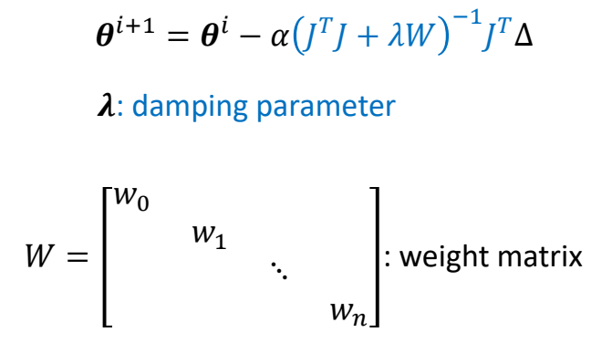
P152
Character 全身IK
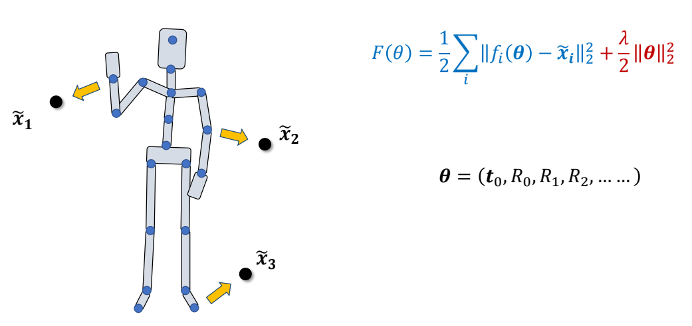
✅ 全身 IK，不同链条上都有目标点。
✅ 可以同时优化所有链，或选一个或选一些。
✅ IK 要更新哪关节也可以自由设定。
P156
总结
✅ IK问题可以使用优化方法，不同优化方法对应不同 IK 方法，例如：
CCD → CCDIK
梯度下降法 → Jacobian transpose
Gaussian → Jacobian Inverse
✅ IK问题可以使用启发式方法，例如FABRIK Andreas Aristidou and Joan Lasenby. 2011.
🔎 FABRIK: A fast, iterative solver for the Inverse Kinematics problem.
Graphical Models
P158
✅ Slerp 结合 Sbline.
✅ 50 fps → 60 fps：先插值，再采样
✅ 惯性插值：UE 基于 SPD 求约束来做 IK
✅ 参考 Darel Holden 博客
本文出自CaterpillarStudyGroup，转载请注明出处。
https://caterpillarstudygroup.github.io/GAMES105_mdbook/